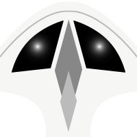
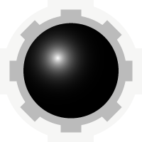
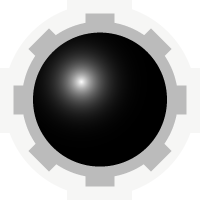
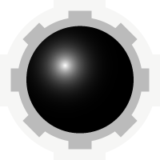

Avaruusalus
Kuvat
Raahaa osat ja taustakuva kansioon. Voit myös suunnitella ja muokata osia.


 


Tehtävä: Suunnittele ja kokoa avaruusalus
HTML
- tee index.html ja style.css
- alusta index.html peruspohjalla
- linkitä style.css headiin
- lataa ship.js ja linkitä se headiin
- lisää title ja favicon
- lisää bodyyn main
- lisää mainin sisälle div jolla on seuraava id ja inline-tyyli:
- id=”ship” style="transform: rotate(0deg);"
- tämän divin sisälle tulee kaikki aluksen osat kuvina (img)
- Case 1: taulukkoon
- Case 2: ilman taulukkoa
- jokaisella kuvalla tulee olla yksilöivä id, jotta sen paikkaan, kulmaan ja peilautumiseen voidaan vaikuttaa CSS:llä
- jos käytät samaa osaa useasti, niin vaihda id:t esim. wing1, wing2, wing3
CSS
-
:root
- määritä root muuttujiin:
- taustan eli tähtitaivaslaatan koko bg_size
- aluksen osan koko tile_size
- aluksen suhteellinen koko tile_scale
- tiilen oikea koko --tile: calc(var(--tile_scale)*var(--tile_size)); body
- nollaa marginaalit
- aseta tähtitaivas taustakuvaksi
- aseta taustakuvatiilen koko muuttujasta
- toista animaatiota loputtomasti
- poista kiihtyvyys animaation alusta ja lopusta
(toisin sanoen toista lineaarisella nopeudella) - määritä animaation kesto sekunteina (aluksen nopeus) @keyframes move_w {…}
- kun tausta liikkuu alaspäin, niin näyttää kun alus liikkuisi ylöspäin
- eli siis #ship toimii referenssinä aluksen osien X, Y koordinaateille
- transition asettaa siirtymäanimaation ja hidastaa kääntymistä
- transform-origin määrittää minkä pisteen perusteella siirtymä lasketaan main
- aseta leveys 100vw
- aseta korkeus 100vh
- tee mainista flex elementti
- keskitä sisältö vaaka- ja pystysuunnassa
Case 1: Taulukolla
- Koska osat ovat neliöitä ja samankokoisia, aluksen kokoamiseen voi käyttää taulukkoa
- Tee esim. 5x5 taulukko ja laita osat kuvina taulukon soluihin
- Poista CSS:llä tyhjä tila taulukon solujen välistä
- Säädä tiilen koko muuttujalla main img{ width: var(--tile); }
- Kierrä tai peilaa osia CSS:llä niille antamiesi id:n perusteella
- Tallenna GitHubiin
Case 2: Vaikeasti
Poista taulukko ja laita ainoastaan img tageja allekkain koodissa
- eli siis muokataan main img selektoria
- kuvat (aluksen osat) asemoidaan yksitellen absoluuttisesti
- kaikki aluksen osat ovat samankokoisia
- siirretään laattaa -50%, X ja Y suunnassa, jotta se on keskellä
- päätä mikä osa on keskellä alusta
- anna img-tagille id html:n puolella
- asettele elementti keskelle top: 0; left: 0;
- lisää osia html:n puolella
- anna osille yksilöivät id:t
- asettele osat paikoilleen top ja left arvoilla
nyt osa asettuu edellisen osan yläpuolelle täsmälleen yhden tiilen verran
nyt osa asettuu keskimmäisen osan alle täsmälleen yhden tiilen verran
osa asettuu keskimmäisen osan oikealle puolelle täsmälleen yhden tiilen verran
- osa asettuu keskimmäisen osan vasemmalle puolelle täsmälleen yhden tiilen verran
- esimerkeissä oli kerroin 1 tai -1
- aluksen kasvaessa, käytä kerrointa 2 tai -2 (tai suurempi luku) siirtääksesi tiiltä enemmän kuin yhden tiilen verran
jos haluat peilata jonkun osan, niin käytä transform scaleX/scaleY(-1)
ja entraa osa paikalleen lisäämällä puolikkaita 0.5 arvoja top/left kertoimiin
Ohjaa avaruusalusta
- lisää bodylle inline-style:
<body style="animation-name: move_w;"> - kutsu starttaus-funktiota ennen bodyn sulkeutumista
<script>init()</script> - Tarkista, että selainikkuna on fokuksessa klikkaamalla kerran alusta
- WASD, 123